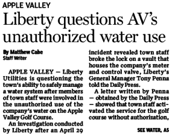

- Stole nearly 900,000 gallons of water for golf course use
CALIFORNIA PENAL CODE
PART 1. OF CRIMES AND PUNISHMENTS [25 – 680] (Part 1 enacted 1872.)
TITLE 13. OF CRIMES AGAINST PROPERTY [450 – 593g] (Title 13 enacted 1872.)
CHAPTER 5. Larceny [484 – 502.9] (Chapter 5 enacted 1872.)
Any person who, with intent to obtain for himself or herself utility services without paying the full lawful charge therefor, or with intent to enable another person to do so, or with intent to deprive any utility of any part of the full lawful charge for utility services it provides, commits, authorizes, solicits, aids, or abets any of the following shall be guilty of a misdemeanor:
- Diverts or causes to be diverted utility services, by any means.
- Prevents any utility meter, or other device used in determining the charge for utility services, from accurately performing its measuring function by tampering or by any other means.
- Tampers with any property owned by or used by the utility to provide utility services.
- Makes or causes to be made any connection with or reconnection with property owned or used by the utility to provide utility services without the authorization or consent of the utility.
- Uses or receives the direct benefit of all or a portion of utility services with knowledge or reason to believe that the diversion, tampering, or unauthorized connection existed at the time of that use, or that the use or receipt was otherwise without the authorization or consent of the utility.

What was reported today in the Daily Press is a BIG DEAL! It should not be swept under the rug like so much has in the past (see the Town’s promise of monthly, then quarterly, “transparency reports,” as an example. Who from Town Staff made the call to break the lock? Were they aware of the public safety implications?